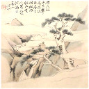

Hover or click on the image

Wikipedia
Clarity On Line (Hilary Barrett)
Oracle of the sun (LiSe)
Visionary I Ching (Paul O’Brien)
Panther Webworks (Wilhelm)
Yellow Bridge
The-IChing.com
iFate
Shamanic Drumming (Michael Drake)
Reset
6
7
8
9